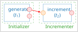

First steps with StreamPU in Python¶
This section presents the first steps for playing with StreamPU in Python. It covers the following key concepts of StreamPU:
- socket: the data holder
- task: the data processing
- module: the tasks holder
- sequence: a directed and acyclic graph of tasks
How to import StreamPU?¶
As every Python package StreamPU may be imported using the import interface.
Organisation of this documentation¶
Code blocks starting with >>> are typed in a Python interpreter; the lines without prompt are the output. The following code block is the start of an example running through this page.
As the output suggests, x is a Socket.
What is a Socket ?¶
A socket is a way to exchange data between tasks (that process this data). The output of the previous example
name: the name of the socket in the taskdtype: data typetask: the task that holds this socket
The name of a socket¶
You may get the name of a socket as follows
Warning
The name attribute of a socket is read-only, you cannot change it.
The name of a socket will be important when you will want to bind the output of a task to the input of another task.
Get the task that owns a socket¶
To recover the task that holds a socket just do
Warning
- The
taskattribute of a socket is read-only, you cannot change it. streampu._extindicates that theTaskclass belongs to the C++ part ofstreampupackage.
Get the socket data type (dtype)¶
The data stored in a socket is strongly typed:
This output indicates that the elements ofx are integers stored on 64 bits.
StreamPU data types
spu recognizes the following data types:
- Unsigned integers:
spu.uint8,spu.uint16,spu.uint32,spu.uint64 - Signed integers:
spu.int8,spu.int16,spu.int32,spu.int64 - Floating point:
spu.float32,spu.float64
Accessing the socket direction¶
In addition to its name, task and dtype attributes, another important concept is the socket direction.
There are 3 different types of socket directions:
- Input socket: read only data,
- Output socket: write only data,
- Forward socket: read and write data.
The socket direction can be recovered as follows
Herex is a forward socket.
Socket directions
Socket directions are stored in the enum spu.Socket.directions:
spu.Socket.directions.IN: input socketspu.Socket.directions.OUT: output socketspu.Socket.directions.FWD: forward socket
Creating a socket from data¶
As we have seen in the example, the function spu.array converts the list [1,2,3,4] into a socket.
The same goes for a 1D NumPy array.
>>> import numpy as np
>>> x = np.array([1,2,3,4], dtype = np.int8)
>>> x
array([1, 2, 3, 4], dtype=int8)
>>> y = spu.array(x)
>>> y
socket([[1 2 3 4]], dtype=int8, name=data, task=Array.read)
int8 is propagated to the socket created by spu.array.
Warning
There is no copy when creating a socket from a NumPy array! Hence, if we modify the numpy data, the socket data is modified accordingly, for example
Converting a socket into a numpy array¶
You can create a NumPy array from a socket by using its numpy attribute as follows
Note
- The NumPy array will have the numpy dtype corresponding to the one of the socket.
- This conversion is also copy-free, hence in the previous example, changing
ywill affect the data ofx.
What is a module?¶
A module is an object that can store one or several tasks.
For example, suppose that we want to randomly generate 8 bits from a Bernoulli distribution. We can build this module from the factory method spu.source_random as follows
>>> src = spu.source_random(8, dtype = spu.int64)
>>> src
<streampu._ext.src.Source_random_int64 object at 0x106f82150>
Note
In this example, the type of src is Source_random_int64. Within the package, this class is located in: streampu._ext.src.
Source_random_int64 indicates that the output dtype of the data generated by src will have int64 dtype.
How to know the tasks of a given module?¶
There are several ways of accessing the tasks of a module.
The simpler one is by accessing its tasks attribute to get the list of all the module's tasks as shown in the following example.
If you just want to get information about the tasks of one module, spu comes with spu.help
>>> spu.help(src)
# module:
# |- name: Source_random
# |- short name: Source
# |- n_frames: 1
# |- tasks:
# | |- name: generate
# | | |- sockets out:
# | | | |- out_data: { n_elts = 8, datatype = int64 }
# | | | |- out_count: { n_elts = 1, datatype = uint32 }
# | | | |- status: { n_elts = 1, datatype = int32 }
Here we see that src has one task named generate that has 3 outputs:
out_data: 8 elements of typeint64out_count: 1 element of typeuint32status: 1 element of typeint32
What is a task?¶
According to the StreamPU documentation, "a task represents the code executed by a node in the data flow graph".
Accessing the task of a module¶
Using the tasks attribute¶
There are several ways of getting the task of a given module.
The first one is by using the tasks attribute as follows
Using mdl[tsk_name]¶
If you know the name of the task, you can also write
Using mdl.tsk_name¶
A task can also be accessed as if it is a module attribute as follows
Note
All methods to access a task will get the same object. The three methods are kept so that a C++ user of StreamPU can easily translate a C++ program to a python program.
How to know the sockets of a task¶
To know the sockets of a task, we can simply use spu.help, but on a task.
>>> spu.help(src.generate)
|- name: generate
| |- sockets out:
| | |- out_data: { n_elts = 8, datatype = int64 }
| | |- out_count: { n_elts = 1, datatype = uint32 }
| | |- status: { n_elts = 1, datatype = int32 }
How to access a socket of a task?¶
Using the sockets attribute of a task¶
Every task has a sockets attribute that contains the lists of its sockets.
Warning
The sockets in tsk.sockets appear in the order of their creation. There is no convention for having for example the input sockets first.
Use tsk.inputs, tsk.outputs, and tsk.forwards to get the inputs, output or forward sockets respectively.
By getting the socket_name item of a socket¶
We can access a socket of a task as follows
>>> tsk = src['generate']
>>> tsk['out_data']
socket([[0 0 0 0 0 0 0 0]], dtype=int64, name=out_data, task=Source_random.generate)
By getting the task_name::socket_name item of a module¶
Another way of accessing the same socket is by accessing the item 'task_name::socket_name' of a module as in the following example.
>>> src['generate::out_data']
socket([[0 0 0 0 0 0 0 0]], dtype=int64, name=out_data, task=Source_random.generate)
By getting the socket_name attribute of a task¶
The last way for accessing the same socket is by using the socket name as a task attribute as follows.
>>> src.generate.out_data
socket([[0 0 0 0 0 0 0 0]], dtype=int64, name=out_data, task=Source_random.generate)
Note
Whatever the way you used to access the socket out_data in the previous examples, the content of the socket is filled with 0. This is due to the fact that the task has never been executed.
Execute a Task¶
The sockets of a task are filled when the task is executed. Let us execute the task generate of src.
>>> src['generate'].exec()
>>> src.generate.out_data
socket([[0 1 1 0 1 1 1 1]], dtype=int64, name=out_data, task=Source_random.generate)
How to build a processing sequence?¶
Suppose that we now want to increment the bits of out_data. To do so, we start by building an incrementer (which is also a module).
inc has a task called increment that has one input socket called in and one output socket called out.
Warning
As in is a keyword of the python language, we cannot use the syntax inc.increment.in to access it.
inc['increment::in'] or inc.increment['in'].
Socket binding¶
To link the source src and the incrementer inc, the output socket out_data of the task generate of the module src should be "bound" to the input socket in of the task increment of the module inc.
This line is schematically equivalent to the following figure.

src.generate.out_data and inc.increment.in.Tasks execution¶
Now we can execute the tasks of each module.
>>> src['generate'].exec()
>>> src['generate::out_data']
socket([[1 0 0 1 1 0 1 0]], dtype=int64, name=out_data, task=Source_random.generate)
>>> inc['increment'].exec()
>>> inc['increment::out']
socket([[2 1 1 2 2 1 2 1]], dtype=int64, name=out, task=Incrementer.increment)
The values are random: yours will differ, but each output of increment is the
corresponding output of generate plus one.
Debug mode activation¶
You can see that the data is automatically transferred from the output of generate to the input of increment.
The data printing can also be handled automatically by setting the debug property of the tasks to True.
>>> src['generate'].debug = True
>>> inc['increment'].debug = True
>>> src['generate'].exec()
# Source_random::generate(int64 out_data[8], uint32 out_count[1])
# {OUT} out_data = [ 0, 0, 0, 1, 0, 1, 1, 0]
# {OUT} out_count = [ 8]
# Returned status: [0 'SUCCESS']
#
>>> inc['increment'].exec()
# Incrementer::increment(const int64 in[8], int64 out[8])
# {IN} in = [ 0, 0, 0, 1, 0, 1, 1, 0]
# {OUT} out = [ 1, 1, 1, 2, 1, 2, 2, 1]
# Returned status: [0 'SUCCESS']
#
>>>
Next steps¶
The next pages show how to simplify these steps and how to replay the graph with a Sequence.